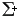
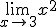
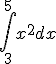
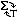
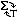

The text editor works like a simple word processor, and is probably similar to the editor you've seen in web-based email programs. Hovering your mouse over a button will display a hint on what the button does.
To begin a new math expression, press the  button, or press the backtick button, `, on your keyboard. This will create a red outlined box. Here you can enter your math expression using calculator-style entry. When you're done with your expression, arrow or click away from the expression, and the expression will display in pretty format. Click on the expression again to edit it.
Some examples of entering math:
| Type | To Get |
|---|---|
| -3x^2+5 | |
| (2+x)/(3-x) | |
| sqrt(x-5) | |
| 3^(x+7) | |
| 1/(x(x+1)) | |
| sin(pi/3x) | |
| lim_(x->3) x^2 |  |
| int_3^5 x^2 dx |  |
If you're not sure of how to enter a special symbol, click the  button to bring up a pallet of symbols you can choose from. If you want to stop the editor from automatically displaying
your math expressions in pretty format, press the  button
to switch into text display method. You can press the button again to swap back to pretty display.
button to bring up a pallet of symbols you can choose from. If you want to stop the editor from automatically displaying
your math expressions in pretty format, press the  button
to switch into text display method. You can press the button again to swap back to pretty display.
To create a graph, press the button. This will place a blank graph in your document. In Internet Explorer using the AdobeSvgViewer plugin, you will double-click on the graph to bring up the graphing control panel. In FireFox, Mozilla, Camino, or Internet Explorer without the plugin, click on the graph to select it, then hit the button again to bring up the control panel.
In the Control Panel, start by selecting the equation type you want to graph, then enter the equation. In most cases, this is all you'll need to do before hitting Add Graph. If you wish, you can specify a domain on which to graph this equation, or select a color, width, etc. for this graph. You can also change the overall window on which the equation is graphed by changing the xmin, xmax, ymin, and ymax. You can also turn off the axis labels or grid and resize the overall size of the graph.
You can graph multiple equations simulateously by clicking Add Graph after entering each equation. You can edit an equation by selecting it from the Graphs list, changing the equation, then pressing "Replace Selected Graph".
You can change the alignment of the graph in your text using the last selection box. Use Float Left or Float Right to have the text flow around the side of your graph.
The editor provides the following key combinations:
HTMLArea Text Editor is © InteractiveTools.com 2002-2004.
dynarch.com 2003-2004
HTMLArea v3.0 developed by Mihai Bazon
ASCIIMath Plugin created by Peter Jipsen, Chapman University,
and David Lippman, Pierce College.
AsciiSvg Plugin created by David Lippman, Pierce College, using
ASCIISvg created by Peter Jipsen, Chapman University.